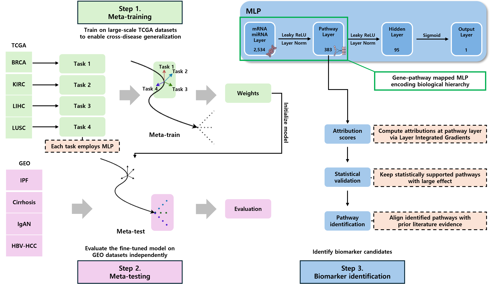
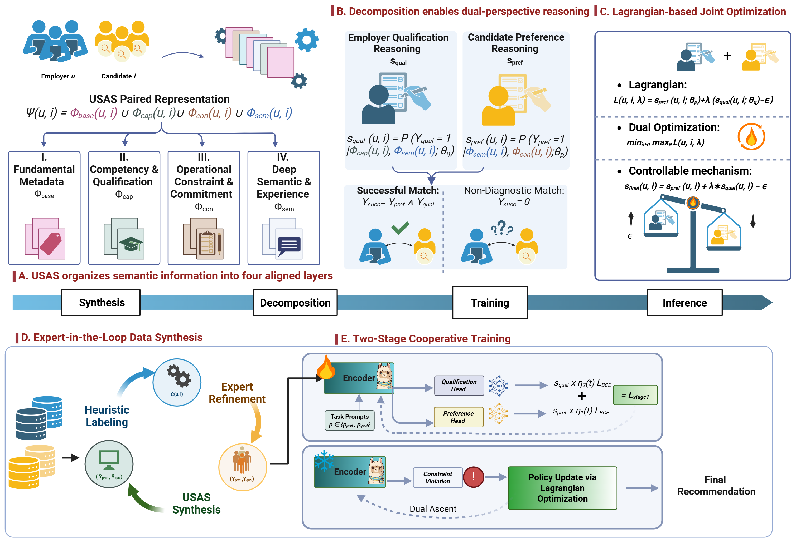

|
Ganghui Yi I'm a M.S. student in Computer Science at the University of Southern California. Previously, I conducted research on few-shot learning for disease prediction and biomarker discovery at the Bioinformatics and Machine Learning Lab, where I was fortunate to be advised by Prof. Kyuri Jo. Currently, I work on digital pathology with whole-slide images, focusing on efficient and generalizable learning, and on immunology-driven protein design for drug discovery. I received my bachelor's degree with honors from Sogang University in Seoul, where I double majored in Computer Science and Life Science. During my undergraduate studies, I also participated in an exchange program at Case Western Reserve University. |
{kind=link}
ResearchMy research interests are AI for healthcare, precision medicine, digital pathology, and drug discovery. |
|

|
PathwayMAML: pathway-aware meta-learning for cancer-to-non-cancer transfer in few-shot disease classification
Jeongjin Ju, Ganghui Yi, Kyuri Jo ISMB, 2026 (Under review) Encoding pathway structure within MAML enables cross-domain few-shot disease classification and pathway-level biomarker discovery. |
|

|
De-conflating Preference and Qualification: Constrained Dual-Perspective Reasoning for Job Recommendation with Large Language Models
Bryce Kan, Wei Yang, Emily Nguyen, Ganghui Yi, Bowen Yi, Chenxiao Yu, Yan Liu ACL ARR, 2026 (Under review) Separating preference from qualification with constrained dual-perspective reasoning enables controllable job recommendation with LLMs. |

|
Few-Shot Learning for Multi-Omics Disease Classification with a MAML-Based Model
Ganghui Yi, Jeongjin Ju, Kyuri Jo KTSDE, 2025 Meta-learning a transferable initialization enables strong multi-omics disease classification in low-data settings across COVID-19, cirrhosis, and HBV-HCC. |
Miscellanea |
 |
I'm into film photography. My main gear is Nikon FE2 and Yashica Electro 35. Although my name might sound Chinese, I'm actually Korean—but fun fact, I did live in China for five years! |
|
Website template by Jon Barron |